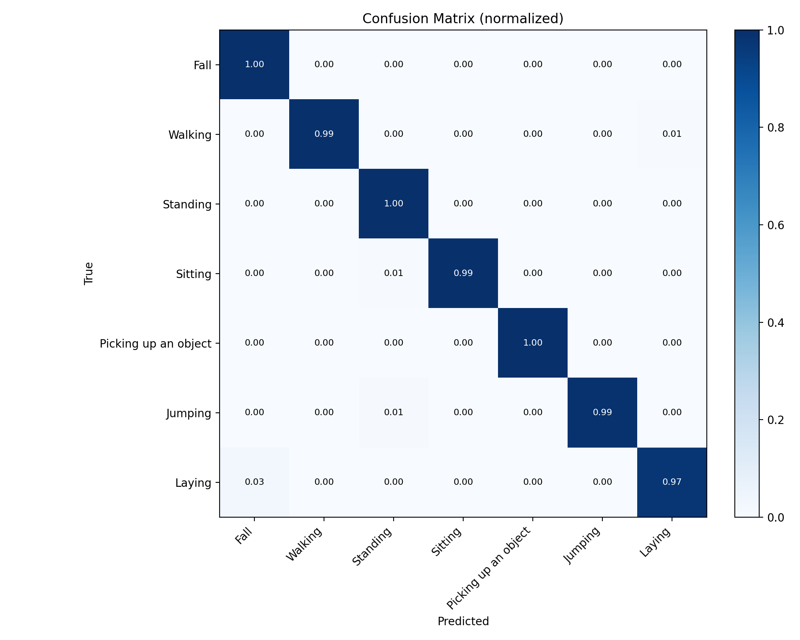
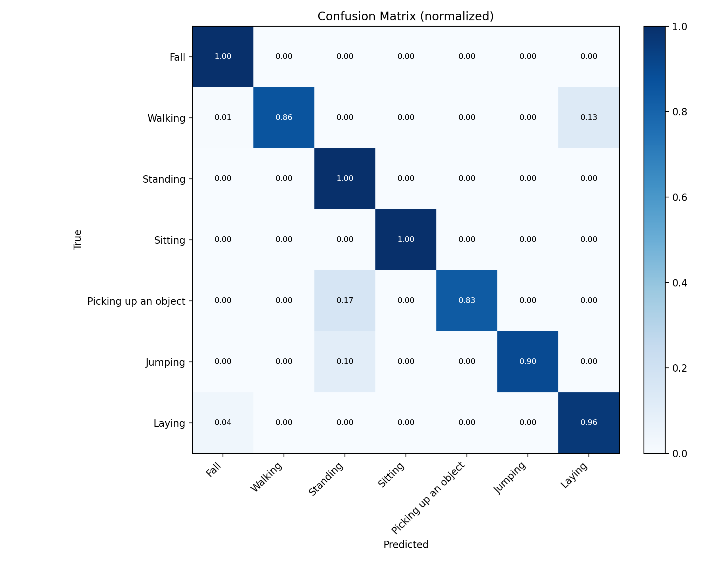
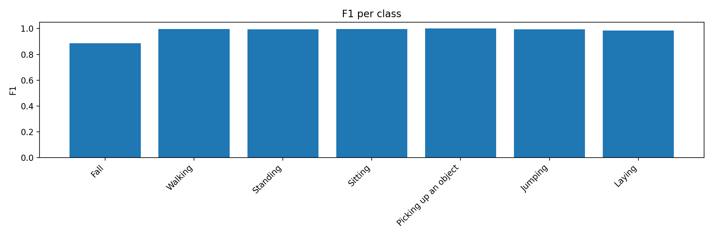
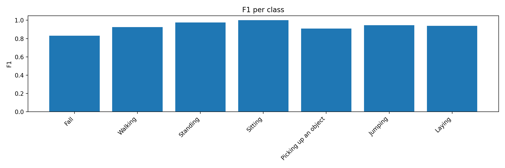
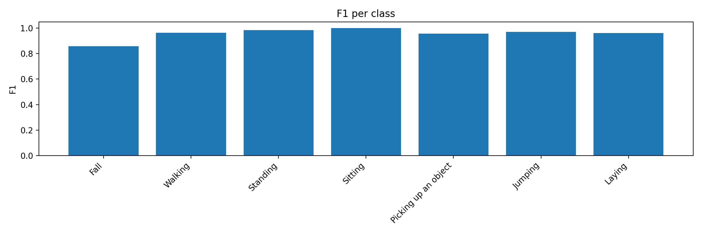

| dataset | data_pkl | test_mode | data_pkl_overridden | eval_split | camera | split_key | subjects | n_samples | loss | acc_top1 | acc_top5 | balanced_acc | macro_f1 | weighted_f1 | fall_class_idx | fall_fbeta | fall_precision | fall_recall | ckpt_metric | ckpt_w | ckpt_beta | ckpt_score | checkpoint | config | device | batch_size | num_workers | frame_step | clip_len_raw | clip_len_sampled |
|---|---|---|---|---|---|---|---|---|---|---|---|---|---|---|---|---|---|---|---|---|---|---|---|---|---|---|---|---|---|---|
| upfall | /home/people/21376026/fall_detection/fall_models/Prototype/models/MotionBERT/data/action/upfall_test.pkl | True | False | camera_1 | 1 | xsub_val | 16-17 | 949 | 0.034205 | 98.946259 | 100.0 | 0.993107 | 0.979129 | 0.989838 | 0 | 0.950704 | 0.794118 | 1.0 | composite | 0.7 | 2.0 | 0.959232 | /home/people/21376026/fall_detection/fall_models/Prototype/models/MotionBERT/checkpoint/action/FT_MB_release_MB_ft_UPFall_xsub/best_epoch.bin | /home/people/21376026/fall_detection/fall_models/Prototype/models/MotionBERT/configs/action/MB_ft_UPFall_xsub.yaml | cuda | 64 | 0 | 1 | 64 | 64 |
| upfall | /home/people/21376026/fall_detection/fall_models/Prototype/models/MotionBERT/data/action/upfall_test.pkl | True | False | camera_2 | 2 | xsub_val | 16-17 | 949 | 0.275237 | 95.258166 | 100.0 | 0.936666 | 0.932228 | 0.952873 | 0 | 0.924658 | 0.710526 | 1.0 | composite | 0.7 | 2.0 | 0.926929 | /home/people/21376026/fall_detection/fall_models/Prototype/models/MotionBERT/checkpoint/action/FT_MB_release_MB_ft_UPFall_xsub/best_epoch.bin | /home/people/21376026/fall_detection/fall_models/Prototype/models/MotionBERT/configs/action/MB_ft_UPFall_xsub.yaml | cuda | 64 | 0 | 1 | 64 | 64 |
| upfall | /home/people/21376026/fall_detection/fall_models/Prototype/models/MotionBERT/data/action/upfall_test.pkl | True | False | combined | 1,2 | xsub_val | 16-17 | 1898 | 0.155893 | 97.102213 | 100.0 | 0.964887 | 0.956016 | 0.971487 | 0 | 0.937500 | 0.750000 | 1.0 | composite | 0.7 | 2.0 | 0.943055 | /home/people/21376026/fall_detection/fall_models/Prototype/models/MotionBERT/checkpoint/action/FT_MB_release_MB_ft_UPFall_xsub/best_epoch.bin | /home/people/21376026/fall_detection/fall_models/Prototype/models/MotionBERT/configs/action/MB_ft_UPFall_xsub.yaml | cuda | 64 | 0 | 1 | 64 | 64 |
Values are percentages. Precision/recall/specificity/F1 are macro-averaged over classes present in this split.
| eval_split | camera | n_samples | accuracy | recall | specificity | precision | f1_score |
|---|---|---|---|---|---|---|---|
| camera_1 | 1 | 949 | 98.946 | 99.311 | 99.833 | 96.858 | 97.913 |
| camera_2 | 2 | 949 | 95.258 | 93.667 | 99.136 | 93.954 | 93.223 |
| combined | 1,2 | 1898 | 97.102 | 96.489 | 99.484 | 95.346 | 95.602 |





| eval_split | camera | class_id | class_name | precision | recall | f1 | support |
|---|---|---|---|---|---|---|---|
| camera_1 | 1 | 0 | Fall | 0.794118 | 1.000000 | 0.885246 | 27 |
| camera_1 | 1 | 1 | Walking | 1.000000 | 0.994505 | 0.997245 | 182 |
| camera_1 | 1 | 2 | Standing | 0.989744 | 1.000000 | 0.994845 | 193 |
| camera_1 | 1 | 3 | Sitting | 1.000000 | 0.994536 | 0.997260 | 183 |
| camera_1 | 1 | 4 | Picking up an object | 1.000000 | 1.000000 | 1.000000 | 6 |
| camera_1 | 1 | 5 | Jumping | 1.000000 | 0.988636 | 0.994286 | 88 |
| camera_1 | 1 | 6 | Laying | 0.996212 | 0.974074 | 0.985019 | 270 |
| camera_2 | 2 | 0 | Fall | 0.710526 | 1.000000 | 0.830769 | 27 |
| camera_2 | 2 | 1 | Walking | 1.000000 | 0.862637 | 0.926254 | 182 |
| camera_2 | 2 | 2 | Standing | 0.950739 | 1.000000 | 0.974747 | 193 |
| camera_2 | 2 | 3 | Sitting | 1.000000 | 1.000000 | 1.000000 | 183 |
| camera_2 | 2 | 4 | Picking up an object | 1.000000 | 0.833333 | 0.909091 | 6 |
| camera_2 | 2 | 5 | Jumping | 1.000000 | 0.897727 | 0.946108 | 88 |
| camera_2 | 2 | 6 | Laying | 0.915493 | 0.962963 | 0.938628 | 270 |
| combined | 1,2 | 0 | Fall | 0.750000 | 1.000000 | 0.857143 | 54 |
| combined | 1,2 | 1 | Walking | 1.000000 | 0.928571 | 0.962963 | 364 |
| combined | 1,2 | 2 | Standing | 0.969849 | 1.000000 | 0.984694 | 386 |
| combined | 1,2 | 3 | Sitting | 1.000000 | 0.997268 | 0.998632 | 366 |
| combined | 1,2 | 4 | Picking up an object | 1.000000 | 0.916667 | 0.956522 | 12 |
| combined | 1,2 | 5 | Jumping | 1.000000 | 0.943182 | 0.970760 | 176 |
| combined | 1,2 | 6 | Laying | 0.954380 | 0.968519 | 0.961397 | 540 |